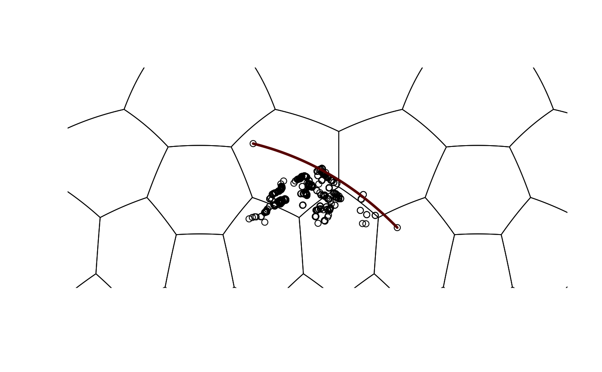

This family of metrics rely on the maximum distance within a point cloud
Usage
maxdist(x, icosa, ...)
mgcd(x, ...)
# S4 method for class 'matrix,missing'
maxdist(
x,
dm = NULL,
long = NULL,
lat = NULL,
duplicates = FALSE,
plot = FALSE,
plot.args = NULL,
full = FALSE,
q = 1
)
# S4 method for class 'data.frame,missing'
maxdist(
x,
long = "long",
lat = "lat",
tax = NULL,
dm = NULL,
duplicates = FALSE,
q = 1,
plot = FALSE,
plot.args = NULL,
full = FALSE
)Arguments
- x
Either a 2D numeric
matrixwith two columns: longitudes and latitudes, adata.framewith the same information.- icosa
An icosahedral grid object the inherits from the
trigridclass. Providing this argumnet reduces the point cloud to the centers of the grid cells. (not yet)- dm
If there is a pre-made distance matrix, it can be plugged in here. If this is provided, the default coordinates will not be used.
- long
character, column name of the longitudes.- lat
character, column name of the latitudes.- duplicates
logical, should identical coordinates be included in the calculation (default isFALSE)- plot
Logical, should the result be plotted? Will plot over active plot (as in
add=TRUE).- plot.args
List arguments passed to the plotting function:
sf::plot.- full
logical, should only the estimate (FALSE) be returned, or additional data as well?(TRUE).- q
numeric, a value between 0 and 1, the quantile.- tax
character, used only in thedata.framemethod. Column name of groups (e.g. taxa) that allows the iteration of the method for multiple groups.
Value
A list with an estimate an two indices the rows of the input matrix that represent the longest great circle (or one of them).
Examples
# 1. Canvas to plot on
hex <- hexagrid(4, sf=TRUE)
plot(hex, reset=FALSE, xlim=c(-15, 40), ylim=c(25, 63))
# 2. Records
data(pinna)
points(pinna[, c("decimallongitude","decimallatitude")])
# 3. calculate and visualize
mgcd <- maxdist(pinna, long="decimallongitude", lat="decimallatitude", plot=TRUE, full=TRUE)
